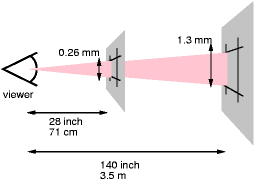
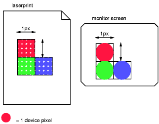

Contents
This section describes a grammar (and forward-compatible parsing rules) common to any level of CSS (including CSS 2.2). Future updates of CSS will adhere to this core syntax, although they may add additional syntactic constraints.
These descriptions are normative. They are also complemented by the normative grammar rules presented in Appendix G.
In this specification, the expressions "immediately before" or "immediately after" mean with no intervening white space or comments.
All levels of CSS — level 1, level 2, and any future levels — use the same core syntax. This allows UAs to parse (though not completely understand) style sheets written in levels of CSS that did not exist at the time the UAs were created. Designers can use this feature to create style sheets that work with older user agents, while also exercising the possibilities of the latest levels of CSS.
At the lexical level, CSS style sheets consist of a sequence of tokens. The list of tokens for CSS is as follows. The definitions use Lex-style regular expressions. Octal codes refer to ISO 10646 ([ISO10646]). As in Lex, in case of multiple matches, the longest match determines the token.
| Token | Definition |
|---|---|
| IDENT | {ident} |
| ATKEYWORD | @{ident} |
| STRING | {string} |
| BAD_STRING | {badstring} |
| BAD_URI | {baduri} |
| BAD_COMMENT | {badcomment} |
| HASH | #{name} |
| NUMBER | {num} |
| PERCENTAGE | {num}% |
| DIMENSION | {num}{ident} |
| URI | {U}{R}{L}\({w}{string}{w}\)| |
| UNICODE-RANGE | u\+[?]{1,6}| |
| CDO | <!-- |
| CDC | --> |
| : | : |
| ; | ; |
| { | \{ |
| } | \} |
| ( | \( |
| ) | \) |
| [ | \[ |
| ] | \] |
| S | [ \t\r\n\f]+ |
| COMMENT | \/\*[^*]*\*+([^/*][^*]*\*+)*\/ |
| FUNCTION | {ident}\( |
| INCLUDES | ~= |
| DASHMATCH | |= |
| DELIM | any other character not matched by the above rules, and neither a single nor a double quote |
The macros in curly braces ({}) above are defined as follows:
| Macro | Definition |
|---|---|
| ident | [-]?{nmstart}{nmchar}* |
| name | {nmchar}+ |
| nmstart | [_a-z]|{nonascii}|{escape} |
| nonascii | [^\0-\177] |
| unicode | \\[0-9a-f]{1,6}(\r\n|[ \n\r\t\f])? |
| escape | {unicode}|\\[^\n\r\f0-9a-f] |
| nmchar | [_a-z0-9-]|{nonascii}|{escape} |
| num | [+-]?([0-9]+|[0-9]*\.[0-9]+)(e[+-]?[0-9]+)? |
| string | {string1}|{string2} |
| string1 | \"([^\n\r\f\\"]|\\{nl}|{escape})*\" |
| string2 | \'([^\n\r\f\\']|\\{nl}|{escape})*\' |
| badstring | {badstring1}|{badstring2} |
| badstring1 | \"([^\n\r\f\\"]|\\{nl}|{escape})*\\? |
| badstring2 | \'([^\n\r\f\\']|\\{nl}|{escape})*\\? |
| badcomment | {badcomment1}|{badcomment2} |
| badcomment1 | \/\*[^*]*\*+([^/*][^*]*\*+)* |
| badcomment2 | \/\*[^*]*(\*+[^/*][^*]*)* |
| baduri | {baduri1}|{baduri2}|{baduri3} |
| baduri1 | {U}{R}{L}\({w}([!#$%&*-~]|{nonascii}|{escape})*{w} |
| baduri2 | {U}{R}{L}\({w}{string}{w} |
| baduri3 | {U}{R}{L}\({w}{badstring} |
| nl | \n|\r\n|\r|\f |
| w | [ \t\r\n\f]* |
| L | l|\\0{0,4}(4c|6c)(\r\n|[ \t\r\n\f])?|\\l
|
| R | r|\\0{0,4}(52|72)(\r\n|[ \t\r\n\f])?|\\r
|
| U | u|\\0{0,4}(55|75)(\r\n|[ \t\r\n\f])?|\\u
|
For example, the rule of the longest match means that
"red-->" is tokenized as the IDENT "red--"
followed by the DELIM ">", rather than as an IDENT
followed by a CDC.
Below is the core syntax for CSS. The sections that follow describe how to use it. Appendix G describes a more restrictive grammar that is closer to the CSS level 2 language. Parts of style sheets that can be parsed according to this grammar but not according to the grammar in Appendix G are among the parts that will be ignored according to the rules for handling parsing errors.
stylesheet : [ CDO | CDC | S | statement ]*;
statement : ruleset | at-rule;
at-rule : ATKEYWORD S* any* [ block | ';' S* ];
block : '{' S* [ any | block | ATKEYWORD S* | ';' S* ]* '}' S*;
ruleset : selector? '{' S* declaration? [ ';' S* declaration? ]* '}' S*;
selector : any+;
declaration : property S* ':' S* value;
property : IDENT;
value : [ any | block | ATKEYWORD S* ]+;
any : [ IDENT | NUMBER | PERCENTAGE | DIMENSION | STRING
| DELIM | URI | HASH | UNICODE-RANGE | INCLUDES
| DASHMATCH | ':' | FUNCTION S* [any|unused]* ')'
| '(' S* [any|unused]* ')' | '[' S* [any|unused]* ']'
] S*;
unused : block | ATKEYWORD S* | ';' S* | CDO S* | CDC S*;
The "unused" production is not used in CSS and will not be used by any future extension. It is included here only to help with error handling. (See 4.2 "Rules for handling parsing errors.")
COMMENT tokens do not occur in the grammar (to keep it readable), but any number of these tokens may appear anywhere outside other tokens. (Note, however, that a comment before or within the @charset rule disables the @charset.)
The token S in the grammar above stands for white space. Only the characters "space" (U+0020), "tab" (U+0009), "line feed" (U+000A), "carriage return" (U+000D), and "form feed" (U+000C) can occur in white space. Other space-like characters, such as "em-space" (U+2003) and "ideographic space" (U+3000), are never part of white space.
The meaning of input that cannot be tokenized or parsed is undefined in CSS 2.2.
Keywords have the form of identifiers. Keywords must not be placed between quotes ("..." or '...'). Thus,
red
is a keyword, but
"red"
is not. (It is a string.) Other illegal examples:
width: "auto";
border: "none";
background: "red";
In CSS, identifiers may begin with '-' (dash) or '_' (underscore). Keywords
and property names beginning
with -' or '_' are reserved for vendor-specific extensions. Such vendor-specific extensions should have one of the following formats:
'-' + vendor identifier + '-' + meaningful name '_' + vendor identifier + '-' + meaningful name
For example, if XYZ organization added a property to describe the color of the border on the East side of the display, they might call it -xyz-border-east-color.
Other known examples:
-moz-box-sizing -moz-border-radius -wap-accesskey
An initial dash or underscore is guaranteed never to be used in a property or keyword by any current or future level of CSS. Thus typical CSS implementations may not recognize such properties and may ignore them according to the rules for handling parsing errors. However, because the initial dash or underscore is part of the grammar, CSS 2.2 implementers should always be able to use a CSS-conforming parser, whether or not they support any vendor-specific extensions.
Authors should avoid vendor-specific extensions
This section is informative.
At the time of writing, the following prefixes are known to exist:
| prefix | organization |
|---|---|
-ms-, mso- | Microsoft |
-moz- | Mozilla |
-o-, -xv- | Opera Software |
-atsc- | Advanced Television Standards Committee |
-wap- | The WAP Forum |
-khtml- | KDE |
-webkit- | Apple |
prince- | YesLogic |
-ah- | Antenna House |
-hp- | Hewlett Packard |
-ro- | Real Objects |
-rim- | Research In Motion |
-tc- | TallComponents |
The following rules always hold:
Note that Unicode is code-by-code equivalent to ISO 10646 (see [UNICODE] and [ISO10646]).
First, inside a string, a backslash followed by a newline is ignored (i.e., the string is deemed not to contain either the backslash or the newline). Outside a string, a backslash followed by a newline stands for itself (i.e., a DELIM followed by a newline).
Second, it cancels the meaning of special CSS characters. Any character (except a hexadecimal digit, linefeed, carriage return, or form feed) can be escaped with a backslash to remove its special meaning. For example, "\"" is a string consisting of one double quote. Style sheet preprocessors must not remove these backslashes from a style sheet since that would change the style sheet's meaning.
Third, backslash escapes allow authors to refer to characters they cannot easily put in a document. In this case, the backslash is followed by at most six hexadecimal digits (0..9A..F), which stand for the ISO 10646 ([ISO10646]) character with that number, which must not be zero. (It is undefined in CSS 2.2 what happens if a style sheet does contain a character with Unicode codepoint zero.) If a character in the range [0-9a-fA-F] follows the hexadecimal number, the end of the number needs to be made clear. There are two ways to do that:
In fact, these two methods may be combined. Only one white space character is ignored after a hexadecimal escape. Note that this means that a "real" space after the escape sequence must be doubled.
If the number is outside the range allowed by Unicode (e.g., "\110000" is above the maximum 10FFFF allowed in current Unicode), the UA may replace the escape with the "replacement character" (U+FFFD). If the character is to be displayed, the UA should show a visible symbol, such as a "missing character" glyph (cf. 15.2, point 5).
The identifier "te\st" is exactly the same identifier as "test".
A CSS style sheet, for any level of CSS, consists of a list of statements (see the grammar above). There are two kinds of statements: at-rules and rule sets. There may be white space around the statements.
At-rules start with an at-keyword, an '@' character followed immediately by an identifier (for example, '@import', '@page').
An at-rule consists of everything up to and including the next semicolon (;) or the next block, whichever comes first.
CSS 2.2 user agents must ignore any '@import' rule that occurs inside a block or after any non-ignored statement other than an @charset or an @import rule.
Assume, for example, that a CSS 2.2 parser encounters this style sheet:
@import "subs.css";
h1 { color: blue }
@import "list.css";
The second '@import' is illegal according to CSS 2.2. The CSS 2.2 parser ignores the whole at-rule, effectively reducing the style sheet to:
@import "subs.css";
h1 { color: blue }
In the following example, the second '@import' rule is invalid, since it occurs inside a '@media' block.
@import "subs.css";
@media print {
@import "print-main.css";
body { font-size: 10pt }
}
h1 {color: blue }
Instead, to achieve the effect of only importing a style sheet for 'print' media, use the @import rule with media syntax, e.g.:
@import "subs.css";
@import "print-main.css" print;
@media print {
body { font-size: 10pt }
}
h1 {color: blue }
A block starts with a left curly brace ({) and ends with the matching right curly brace (}). In between there may be any tokens, except that parentheses (( )), brackets ([ ]), and braces ({ }) must always occur in matching pairs and may be nested. Single (') and double quotes (") must also occur in matching pairs, and characters between them are parsed as a string. See Tokenization above for the definition of a string.
Here is an example of a block. Note that the right brace between the double quotes does not match the opening brace of the block, and that the second single quote is an escaped character, and thus does not match the first single quote:
{ causta: "}" + ({7} * '\'') }
Note that the above rule is not valid CSS 2.2, but it is still a block as defined above.
A rule set (also called "rule") consists of a selector followed by a declaration block.
A declaration block starts with a left curly brace ({) and ends with the matching right curly brace (}). In between there must be a list of zero or more semicolon-separated (;) declarations.
The selector (see also the section on selectors) consists of everything up to (but not including) the first left curly brace ({). A selector always goes together with a declaration block. When a user agent cannot parse the selector (i.e., it is not valid CSS 2.2), it must ignore the selector and the following declaration block (if any) as well.
CSS 2.2 gives a special meaning to the comma (,) in selectors. However, since it is not known if the comma may acquire other meanings in future updates of CSS, the whole statement should be ignored if there is an error anywhere in the selector, even though the rest of the selector may look reasonable in CSS 2.2.
For example, since the "&" is not a valid token in a CSS 2.2 selector, a CSS 2.2 user agent must ignore the whole second line, and not set the color of H3 to red:
h1, h2 {color: green }
h3, h4 & h5 {color: red }
h6 {color: black }
Here is a more complex example. The first two pairs of curly braces are inside a string, and do not mark the end of the selector. This is a valid CSS 2.2 rule.
p[example="public class foo\
{\
private int x;\
\
foo(int x) {\
this.x = x;\
}\
\
}"] { color: red }
A declaration is either empty or consists of a property name, followed by a colon (:), followed by a property value. Around each of these there may be white space.
Because of the way selectors work, multiple declarations for the same selector may be organized into semicolon (;) separated groups.
Thus, the following rules:
h1 { font-weight: bold }
h1 { font-size: 12px }
h1 { line-height: 14px }
h1 { font-family: Helvetica }
h1 { font-variant: normal }
h1 { font-style: normal }
are equivalent to:
h1 {
font-weight: bold;
font-size: 12px;
line-height: 14px;
font-family: Helvetica;
font-variant: normal;
font-style: normal
}
A property name is an identifier. Any token may occur in the property value. Parentheses ("( )"), brackets ("[ ]"), braces ("{ }"), single quotes ('), and double quotes (") must come in matching pairs, and semicolons not in strings must be escaped. Parentheses, brackets, and braces may be nested. Inside the quotes, characters are parsed as a string.
The syntax of values is specified separately for each property, but in any case, values are built from identifiers, strings, numbers, lengths, percentages, URIs, colors, etc.
A user agent must ignore a declaration with an invalid property name or an invalid value. Every CSS property has its own syntactic and semantic restrictions on the values it accepts.
For example, assume a CSS 2.2 parser encounters this style sheet:
h1 { color: red; font-style: 12pt } /* Invalid value: 12pt */
p { color: blue; font-vendor: any; /* Invalid prop.: font-vendor */
font-variant: small-caps }
em em { font-style: normal }
The second declaration on the first line has an invalid value '12pt'. The second declaration on the second line contains an undefined property 'font-vendor'. The CSS 2.2 parser will ignore these declarations, effectively reducing the style sheet to:
h1 { color: red; }
p { color: blue; font-variant: small-caps }
em em { font-style: normal }
Comments begin with the characters "/*" and end with the characters "*/". They may occur anywhere outside other tokens, and their contents have no influence on the rendering. Comments may not be nested.
CSS also allows the SGML comment delimiters ("<!--" and "-->") in certain places defined by the grammar, but they do not delimit CSS comments. They are permitted so that style rules appearing in an HTML source document (in the STYLE element) may be hidden from pre-HTML 3.2 user agents. See the HTML 4 specification ([HTML4]) for more information.
In some cases, user agents must ignore part of an illegal style sheet. This specification defines ignore to mean that the user agent parses the illegal part (in order to find its beginning and end), but otherwise acts as if it had not been there. CSS 2.2 reserves for future updates of CSS all property:value combinations and @-keywords that do not contain an identifier beginning with dash or underscore. Implementations must ignore such combinations (other than those introduced by future updates of CSS).
To ensure that new properties and new values for existing properties can be added in the future, user agents are required to obey the following rules when they encounter the following scenarios:
h1 { color: red; rotation: 70minutes }
the user agent will treat this as if the style sheet had been
h1 { color: red }
img { float: left } /* correct CSS 2.2 */
img { float: left here } /* "here" is not a value of 'float' */
img { background: "red" } /* keywords cannot be quoted */
img { border-width: 3 } /* a unit must be specified for length values */
img { float: left }
img { }
img { }
img { }
A user agent conforming to a future CSS specification may accept one or more of the other rules as well.
p { color:green }
p { color:green; color } /* malformed declaration missing ':', value */
p { color:red; color; color:green } /* same with expected recovery */
p { color:green; color: } /* malformed declaration missing value */
p { color:red; color:; color:green } /* same with expected recovery */
p { color:green; color{;color:maroon} } /* unexpected tokens { } */
p { color:red; color{;color:maroon}; color:green } /* same with recovery */
p @here {color: red} /* ruleset with unexpected at-keyword "@here" */
@foo @bar; /* at-rule with unexpected at-keyword "@bar" */
}} {{ - }} /* ruleset with unexpected right brace */
) ( {} ) p {color: red } /* ruleset with unexpected right parenthesis */
@three-dee {
@background-lighting {
azimuth: 30deg;
elevation: 190deg;
}
h1 { color: red }
}
h1 { color: blue }
The '@three-dee' at-rule is not part of CSS 2.2. Therefore, the whole at-rule (up to, and including, the third right curly brace) is ignored. A CSS 2.2 user agent ignores it, effectively reducing the style sheet to:
h1 { color: blue }
Something inside an at-rule that is ignored because it is invalid, such as an invalid declaration within an @media-rule, does not make the entire at-rule invalid.
User agents must close all open constructs (for example: blocks, parentheses, brackets, rules, strings, and comments) at the end of the style sheet. For example:
@media screen {
p:before { content: 'Hello
would be treated the same as:
@media screen {
p:before { content: 'Hello'; }
}
in a conformant UA.
User agents must close strings upon reaching the end of a line (i.e., before an unescaped line feed, carriage return or form feed character), but then drop the construct (declaration or rule) in which the string was found. For example:
p {
color: green;
font-family: 'Courier New Times
color: red;
color: green;
}
...would be treated the same as:
p { color: green; color: green; }
...because the second declaration (from 'font-family' to the semicolon after 'color: red') is invalid and is dropped.
Some value types may have integer values (denoted by <integer>) or real number values (denoted by <number>). Real numbers and integers are specified in decimal notation only. An <integer> consists of one or more digits "0" to "9". A <number> can either be an <integer>, or it can be zero or more digits followed by a dot (.) followed by one or more digits. Both integers and real numbers may immediately be preceded by a "-" or "+" to indicate the sign. -0 is equivalent to 0 and is not a negative number.
Note that many properties that allow an integer or real number as a value actually restrict the value to some range, often to a non-negative value.
Lengths refer to distance measurements.
The format of a length value (denoted by <length> in this specification) is a <number> (with or without a decimal point) immediately followed by a unit identifier (e.g., px, em, etc.). After a zero length, the unit identifier is optional.
Some properties allow negative length values, but this may complicate the formatting model and there may be implementation-specific limits. If a negative length value cannot be supported, it should be converted to the nearest value that can be supported.
If a negative length value is set on a property that does not allow negative length values, the declaration is ignored.
In cases where the used length cannot be supported, user agents must approximate it in the actual value.
There are two types of length units: relative and absolute. Relative length units specify a length relative to another length property. Style sheets that use relative units can more easily scale from one output environment to another.
Relative units are:
h1 { margin: 0.5em } /* em */
h1 { margin: 1ex } /* ex */
The 'em' unit is equal to the computed value of the 'font-size' property of the element on which it is used. The exception is when 'em' occurs in the value of the 'font-size' property itself, in which case it refers to the font size of the parent element. It may be used for vertical or horizontal measurement. (This unit is also sometimes called the quad-width in typographic texts.)
The 'ex' unit is defined by the element's first available font. The exception is when 'ex' occurs in the value of the 'font-size' property, in which case it refers to the 'ex' of the parent element.
The 'x-height' is so called because it is often equal to the height of the lowercase "x". However, an 'ex' is defined even for fonts that do not contain an "x".
The x-height of a font can be found in different ways. Some fonts contain reliable metrics for the x-height. If reliable font metrics are not available, UAs may determine the x-height from the height of a lowercase glyph. One possible heuristic is to look at how far the glyph for the lowercase "o" extends below the baseline, and subtract that value from the top of its bounding box. In the cases where it is impossible or impractical to determine the x-height, a value of 0.5em should be used.
The rule:
h1 { line-height: 1.2em }
means that the line height of "h1" elements will be 20% greater than the font size of the "h1" elements. On the other hand:
h1 { font-size: 1.2em }
means that the font-size of "h1" elements will be 20% greater than the font size inherited by "h1" elements.
When specified for the root of the document tree (e.g., "HTML" in HTML), 'em' and 'ex' refer to the property's initial value.
Child elements do not inherit the relative values specified for their parent; they inherit the computed values.
In the following rules, the computed 'text-indent' value of "h1" elements will be 36px, not 45px, if "h1" is a child of the "body" element.
body {
font-size: 12px;
text-indent: 3em; /* i.e., 36px */
}
h1 { font-size: 15px }
Absolute length units are fixed in relation to each other. They are mainly useful when the output environment is known. The absolute units consist of the physical units (in, cm, mm, pt, pc) and the px unit:
For a CSS device, these dimensions are either anchored (i) by relating the physical units to their physical measurements, or (ii) by relating the pixel unit to the reference pixel. For print media and similar high-resolution devices, the anchor unit should be one of the standard physical units (inches, centimeters, etc). For lower-resolution devices, and devices with unusual viewing distances, it is recommended instead that the anchor unit be the pixel unit. For such devices it is recommended that the pixel unit refer to the whole number of device pixels that best approximates the reference pixel.
Note that if the anchor unit is the pixel unit, the physical units might not match their physical measurements. Alternatively if the anchor unit is a physical unit, the pixel unit might not map to a whole number of device pixels.
Note that this definition of the pixel unit and the physical units differs from previous versions of CSS. In particular, in previous versions of CSS the pixel unit and the physical units were not related by a fixed ratio: the physical units were always tied to their physical measurements while the pixel unit would vary to most closely match the reference pixel. (This change was made because too much existing content relies on the assumption of 96dpi, and breaking that assumption breaks the content.)
The reference pixel is the visual angle of one pixel on a device with a pixel density of 96dpi and a distance from the reader of an arm's length. For a nominal arm's length of 28 inches, the visual angle is therefore about 0.0213 degrees. For reading at arm's length, 1px thus corresponds to about 0.26 mm (1/96 inch).
The image below illustrates the effect of viewing distance on the size of a reference pixel: a reading distance of 71 cm (28 inches) results in a reference pixel of 0.26 mm, while a reading distance of 3.5 m (12 feet) results in a reference pixel of 1.3 mm.
 [D]
This second image illustrates the effect of a device's resolution on the pixel unit: an area of 1px by 1px is covered by a single dot in a low-resolution device (e.g. a typical computer display), while the same area is covered by 16 dots in a higher resolution device (such as a printer).
 [D]
h1 { margin: 0.5in } /* inches */
h2 { line-height: 3cm } /* centimeters */
h3 { word-spacing: 4mm } /* millimeters */
h4 { font-size: 12pt } /* points */
h4 { font-size: 1pc } /* picas */
p { font-size: 12px } /* px */
The format of a percentage value (denoted by <percentage> in this specification) is a <number> immediately followed by '%'.
Percentage values are always relative to another value, for example a length. Each property that allows percentages also defines the value to which the percentage refers. The value may be that of another property for the same element, a property for an ancestor element, or a value of the formatting context (e.g., the width of a containing block). When a percentage value is set for a property of the root element and the percentage is defined as referring to the inherited value of some property, the resultant value is the percentage times the initial value of that property.
Since child elements (generally) inherit the computed values of their parent, in the following example, the children of the P element will inherit a value of 12px for 'line-height', not the percentage value (120%):
p { font-size: 10px }
p { line-height: 120% } /* 120% of 'font-size' */
URI values (Uniform Resource Identifiers, see [RFC3986], which includes URLs, URNs, etc) in this specification are denoted by <uri>. The functional notation used to designate URIs in property values is "url()", as in:
body { background: url("http://www.example.com/pinkish.png") }
The format of a URI value is 'url(' followed by optional white space followed by an optional single quote (') or double quote (") character followed by the URI itself, followed by an optional single quote (') or double quote (") character followed by optional white space followed by ')'. The two quote characters must be the same.
An example without quotes:
li { list-style: url(http://www.example.com/redball.png) disc }
Some characters appearing in an unquoted URI, such as parentheses, white space characters, single quotes (') and double quotes ("), must be escaped with a backslash so that the resulting URI value is a URI token: '\(', '\)'.
Depending on the type of URI, it might also be possible to write the above characters as URI-escapes (where "(" = %28, ")" = %29, etc.) as described in [RFC3986].
Note that COMMENT tokens cannot occur within other tokens: thus, "url(/*x*/pic.png)" denotes the URI "/*x*/pic.png", not "pic.png".
In order to create modular style sheets that are not dependent on the absolute location of a resource, authors may use relative URIs. Relative URIs (as defined in [RFC3986]) are resolved to full URIs using a base URI. RFC 3986, section 5, defines the normative algorithm for this process. For CSS style sheets, the base URI is that of the style sheet, not that of the source document.
For example, suppose the following rule:
body { background: url("yellow") }
is located in a style sheet designated by the URI:
http://www.example.org/style/basic.css
The background of the source document's BODY will be tiled with whatever image is described by the resource designated by the URI
http://www.example.org/style/yellow
User agents may vary in how they handle invalid URIs or URIs that designate unavailable or inapplicable resources.
Counters are denoted by case-sensitive identifiers (see the 'counter-increment' and 'counter-reset' properties). To refer to the value of a counter, the notation 'counter(<identifier>)' or 'counter(<identifier>, <'list-style-type'>)', with optional white space separating the tokens, is used. The default style is 'decimal'.
To refer to a sequence of nested counters of the same name, the notation is 'counters(<identifier>, <string>)' or 'counters(<identifier>, <string>, <'list-style-type'>)' with optional white space separating the tokens.
See "Nested counters and scope" in the chapter on generated content for how user agents must determine the value or values of the counter. See the definition of counter values of the 'content' property for how it must convert these values to a string.
In CSS 2.2, the values of counters can only be referred to from the 'content' property. Note that 'none' is a possible <'list-style-type'>: 'counter(x, none)' yields an empty string.
Here is a style sheet that numbers paragraphs (p) for each chapter (h1). The paragraphs are numbered with roman numerals, followed by a period and a space:
p {counter-increment: par-num}
h1 {counter-reset: par-num}
p:before {content: counter(par-num, upper-roman) ". "}
A <color> is either a keyword or a numerical RGB specification.
The list of color keywords is: aqua, black, blue, fuchsia, gray, green, lime, maroon, navy, olive, orange, purple, red, silver, teal, white, and yellow. These 17 colors have the following values:
In addition to these color keywords, users may specify keywords that correspond to the colors used by certain objects in the user's environment. Please consult the section on system colors for more information.
body {color: black; background: white }
h1 { color: maroon }
h2 { color: olive }
The RGB color model is used in numerical color specifications. These examples all specify the same color:
em { color: #f00 } /* #rgb */
em { color: #ff0000 } /* #rrggbb */
em { color: rgb(255,0,0) }
em { color: rgb(100%, 0%, 0%) }
The format of an RGB value in hexadecimal notation is a '#' immediately followed by either three or six hexadecimal characters. The three-digit RGB notation (#rgb) is converted into six-digit form (#rrggbb) by replicating digits, not by adding zeros. For example, #fb0 expands to #ffbb00. This ensures that white (#ffffff) can be specified with the short notation (#fff) and removes any dependencies on the color depth of the display.
The format of an RGB value in the functional notation is 'rgb(' followed by a comma-separated list of three numerical values (either three integer values or three percentage values) followed by ')'. The integer value 255 corresponds to 100%, and to F or FF in the hexadecimal notation: rgb(255,255,255) = rgb(100%,100%,100%) = #FFF. White space characters are allowed around the numerical values.
All RGB colors are specified in the sRGB color space (see [SRGB]). User agents may vary in the fidelity with which they represent these colors, but using sRGB provides an unambiguous and objectively measurable definition of what the color should be, which can be related to international standards (see [COLORIMETRY]).
Conforming user agents may limit their color-displaying efforts to performing a gamma-correction on them. sRGB specifies a display gamma of 2.2 under specified viewing conditions. User agents should adjust the colors given in CSS such that, in combination with an output device's "natural" display gamma, an effective display gamma of 2.2 is produced. Note that only colors specified in CSS are affected; e.g., images are expected to carry their own color information.
Values outside the device gamut should be clipped or mapped into the gamut when the gamut is known: the red, green, and blue values must be changed to fall within the range supported by the device. Users agents may perform higher quality mapping of colors from one gamut to another. For a typical CRT monitor, whose device gamut is the same as sRGB, the four rules below are equivalent:
em { color: rgb(255,0,0) } /* integer range 0 - 255 */
em { color: rgb(300,0,0) } /* clipped to rgb(255,0,0) */
em { color: rgb(255,-10,0) } /* clipped to rgb(255,0,0) */
em { color: rgb(110%, 0%, 0%) } /* clipped to rgb(100%,0%,0%) */
Other devices, such as printers, have different gamuts than sRGB; some colors outside the 0..255 sRGB range will be representable (inside the device gamut), while other colors inside the 0..255 sRGB range will be outside the device gamut and will thus be mapped.
Note. Mapping or clipping of color values should be done to the actual device gamut if known (which may be larger or smaller than 0..255).
Strings can either be written with double quotes or with single quotes. Double quotes cannot occur inside double quotes, unless escaped (e.g., as '\"' or as '\22'). Analogously for single quotes (e.g., "\'" or "\27").
"this is a 'string'" "this is a \"string\"" 'this is a "string"' 'this is a \'string\''
A string cannot directly contain a newline. To include a newline in a string, use an escape representing the line feed character in ISO-10646 (U+000A), such as "\A" or "\00000a". This character represents the generic notion of "newline" in CSS. See the 'content' property for an example.
It is possible to break strings over several lines, for aesthetic or other reasons, but in such a case the newline itself has to be escaped with a backslash (\). For instance, the following two selectors are exactly the same:
a[title="a not s\
o very long title"] {/*...*/}
a[title="a not so very long title"] {/*...*/}
If a UA does not support a particular value, it should ignore that value when parsing style sheets, as if that value was an illegal value. For example:
h3 {
display: inline;
display: run-in;
}
A UA that supports the 'run-in' value for the 'display' property will accept the first display declaration and then "write over" that value with the second display declaration. A UA that does not support the 'run-in' value will process the first display declaration and ignore the second display declaration.
A CSS style sheet is a sequence of characters from the Universal Character Set (see [ISO10646]). For transmission and storage, these characters must be encoded by a character encoding that supports the set of characters available in US-ASCII (e.g., UTF-8, ISO 8859-x, SHIFT JIS, etc.). For a good introduction to character sets and character encodings, please consult the HTML 4 specification ([HTML4], chapter 5). See also the XML 1.0 specification ([XML10], sections 2.2 and 4.3.3, and Appendix F).
When a style sheet is embedded in another document, such as in the STYLE element or "style" attribute of HTML, the style sheet shares the character encoding of the whole document.
When a style sheet resides in a separate file, user agents must observe the following priorities when determining a style sheet's character encoding (from highest priority to lowest):
<link charset=""> or other metadata from the linking mechanism (if any)Authors using an @charset rule must place the rule at the very beginning of the style sheet, preceded by no characters. (If a byte order mark is appropriate for the encoding used, it may precede the @charset rule.)
After "@charset", authors specify the name of a character encoding (in quotes). For example:
@charset "ISO-8859-1";@charset must be written literally, i.e., the 10 characters '@charset "' (lowercase, no backslash escapes), followed by the encoding name, followed by '";'.
The name must be a charset name as described in the IANA registry. See [CHARSETS] for a complete list of charsets. Authors should use the charset names marked as "preferred MIME name" in the IANA registry.
User agents must support at least the UTF-8 encoding.
If rule 1 above (an HTTP "charset" parameter or similar) yields a character encoding and it is one of UTF-8, UTF-16 or UTF-32, then a BOM, if any, at the start of the file overrides that character encoding, as follows:
| First bytes (hexadecimal) | Resulting encoding |
|---|---|
| 00 00 FE FF | UTF-32, big-endian |
| FF FE 00 00 | UTF-32, little-endian |
| FE FF | UTF-16, big-endian |
| FF FE | UTF-16, little-endian |
| EF BB BF | UTF-8 |
If rule 1 yields a character encoding of UTF-16BE, UTF-16LE, UTF-32BE or UTF-32LE, then it is an error if the file starts with a BOM. A CSS UA must recover by ignoring the specified encoding and using the table above.
Note that the fact that a BOM at the start of a file is en error in UTF-16BE, UTF-16LE, UTF-32BE or UTF-32LE is specified by [UNICODE].
User agents must ignore any @charset rule not at the beginning of the style sheet. When user agents detect the character encoding using the BOM and/or the @charset rule, they should follow the following rules:
| Initial Bytes | Result |
|---|---|
| EF BB BF 40 63 68 61 72 73 65 74 20 22 (XX)* 22 3B | as specified |
| EF BB BF | UTF-8 |
| 40 63 68 61 72 73 65 74 20 22 (XX)* 22 3B | as specified |
| FE FF 00 40 00 63 00 68 00 61 00 72 00 73 00 65 00 74 00 20 00 22 (00 XX)* 00 22 00 3B | as specified (with BE endianness if not specified) |
| 00 40 00 63 00 68 00 61 00 72 00 73 00 65 00 74 00 20 00 22 (00 XX)* 00 22 00 3B | as specified (with BE endianness if not specified) |
| FF FE 40 00 63 00 68 00 61 00 72 00 73 00 65 00 74 00 20 00 22 00 (XX 00)* 22 00 3B 00 | as specified (with LE endianness if not specified) |
| 40 00 63 00 68 00 61 00 72 00 73 00 65 00 74 00 20 00 22 00 (XX 00)* 22 00 3B 00 | as specified (with LE endianness if not specified) |
| 00 00 FE FF 00 00 00 40 00 00 00 63 00 00 00 68 00 00 00 61 00 00 00 72 00 00 00 73 00 00 00 65 00 00 00 74 00 00 00 20 00 00 00 22 (00 00 00 XX)* 00 00 00 22 00 00 00 3B | as specified (with BE endianness if not specified) |
| 00 00 00 40 00 00 00 63 00 00 00 68 00 00 00 61 00 00 00 72 00 00 00 73 00 00 00 65 00 00 00 74 00 00 00 20 00 00 00 22 (00 00 00 XX)* 00 00 00 22 00 00 00 3B | as specified (with BE endianness if not specified) |
| 00 00 FF FE 00 00 40 00 00 00 63 00 00 00 68 00 00 00 61 00 00 00 72 00 00 00 73 00 00 00 65 00 00 00 74 00 00 00 20 00 00 00 22 00 (00 00 XX 00)* 00 00 22 00 00 00 3B 00 | as specified (with 2143 endianness if not specified) |
| 00 00 40 00 00 00 63 00 00 00 68 00 00 00 61 00 00 00 72 00 00 00 73 00 00 00 65 00 00 00 74 00 00 00 20 00 00 00 22 00 (00 00 XX 00)* 00 00 22 00 00 00 3B 00 | as specified (with 2143 endianness if not specified) |
| FE FF 00 00 00 40 00 00 00 63 00 00 00 68 00 00 00 61 00 00 00 72 00 00 00 73 00 00 00 65 00 00 00 74 00 00 00 20 00 00 00 22 00 00 (00 XX 00 00)* 00 22 00 00 00 3B 00 00 | as specified (with 3412 endianness if not specified) |
| 00 40 00 00 00 63 00 00 00 68 00 00 00 61 00 00 00 72 00 00 00 73 00 00 00 65 00 00 00 74 00 00 00 20 00 00 00 22 00 00 (00 XX 00 00)* 00 22 00 00 00 3B 00 00 | as specified (with 3412 endianness if not specified) |
| FF FE 00 00 40 00 00 00 63 00 00 00 68 00 00 00 61 00 00 00 72 00 00 00 73 00 00 00 65 00 00 00 74 00 00 00 20 00 00 00 22 00 00 00 (XX 00 00 00)* 22 00 00 00 3B 00 00 00 | as specified (with LE endianness if not specified) |
| 40 00 00 00 63 00 00 00 68 00 00 00 61 00 00 00 72 00 00 00 73 00 00 00 65 00 00 00 74 00 00 00 20 00 00 00 22 00 00 00 (XX 00 00 00)* 22 00 00 00 3B 00 00 00 | as specified (with LE endianness if not specified) |
| 00 00 FE FF | UTF-32-BE |
| FF FE 00 00 | UTF-32-LE |
| 00 00 FF FE | UTF-32-2143 |
| FE FF 00 00 | UTF-32-3412 |
| FE FF | UTF-16-BE |
| FF FE | UTF-16-LE |
| 7C 83 88 81 99 A2 85 A3 40 7F (YY)* 7F 5E | as specified, transcoded from EBCDIC to ASCII |
| AE 83 88 81 99 A2 85 A3 40 FC (YY)* FC 5E | as specified, transcoded from IBM1026 to ASCII |
| 00 63 68 61 72 73 65 74 20 22 (YY)* 22 3B | as specified, transcoded from GSM 03.38 to ASCII |
| analogous patterns | User agents may support additional, analogous, patterns if they support encodings that are not handled by the patterns here |
User agents must ignore style sheets in unknown encodings.
A style sheet may have to refer to characters that cannot be represented in the current character encoding. These characters must be written as escaped references to ISO 10646 characters. These escapes serve the same purpose as numeric character references in HTML or XML documents (see [HTML4], chapters 5 and 25).
The character escape mechanism should be used when only a few characters must be represented this way. If most of a style sheet requires escaping, authors should encode it with a more appropriate encoding (e.g., if the style sheet contains a lot of Greek characters, authors might use "ISO-8859-7" or "UTF-8").
Intermediate processors using a different character encoding may translate these escaped sequences into byte sequences of that encoding. Intermediate processors must not, on the other hand, alter escape sequences that cancel the special meaning of an ASCII character.
Conforming user agents must correctly map to ISO-10646 all characters in any character encodings that they recognize (or they must behave as if they did).
For example, a style sheet transmitted as ISO-8859-1 (Latin-1) cannot contain Greek letters directly: "κουρος" (Greek: "kouros") has to be written as "\3BA\3BF\3C5\3C1\3BF\3C2".
Note. In HTML 4, numeric character references are interpreted in "style" attribute values but not in the content of the STYLE element. Because of this asymmetry, we recommend that authors use the CSS character escape mechanism rather than numeric character references for both the "style" attribute and the STYLE element. For example, we recommend:
<SPAN style="font-family: L\FC beck">...</SPAN>
rather than:
<SPAN style="font-family: Lübeck">...</SPAN>